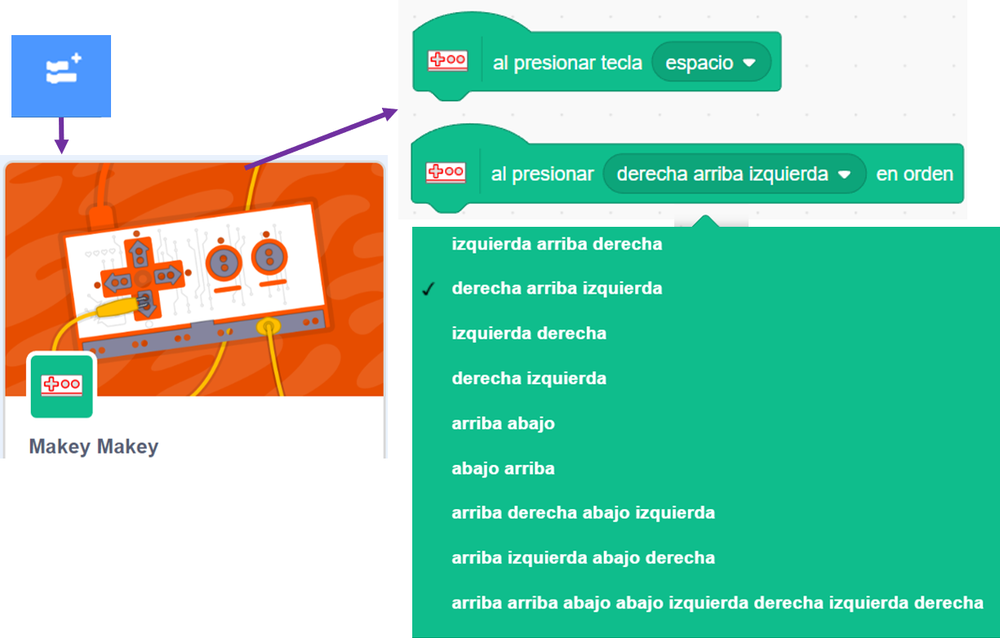

Seguro que te has divertido jugando y has aprendido mucho sobre los juegos de preguntas y
Seguro que te has divertido jugando y has aprendido mucho sobre los juegos de preguntas y respuestas.
respuestas.
Ahora te propongo entrar en la página de Scratch y buscar juegos de este tipo, recuerda que tenemos que hacer un juego interactivo de preguntas y respuestas. Sólo tienes que poner en el buscador de su página web, donde está la lupa, lo que quieres explorar. Vas a encontrarte con muchos juegos de preguntas y respuestas. Haz clic en los que te atraigan más y echa una partida. Te vendrá muy bien para saber todo lo que se puede hacer con Scratch en este tipo de juegos.
¿Te gustaría ver cómo están programados? Haz clic en la pestaña ver dentro, que te encontrarás en la esquina superior derecha de cada juego. Observa los bloques utilizados y el programa realizado, te ayudará a familiarizarte con la programación de este tipo de proyectos.
Y ahora te toca a ti interactuar, tocar y probar sin miedo en Scratch.
¿No sabes por dónde empezar? ¡Sígueme! En las páginas siguientes tienes pistas para encontrar todo lo que nos puede servir:
Elementos del juego
 Cuando nos invitan a jugar siempre nos dicen en qué consiste el juego.
Cuando nos invitan a jugar siempre nos dicen en qué consiste el juego.
Prueba a insertar un personaje de la galería para que explique el juego. Este mismo personaje puede ser el que haga las preguntas.
No dejes el fondo blanco, es un poco aburrido. Inserta un fondo desde la galería o carga un archivo desde tu ordenador.
Escribimos
¿En qué bloques de Scratch puedes escribir lo que tú quieras?
Cuando los encuentres, desplázalos al área de programación. ¿Puedes escribir? Si es así, son seguramente los bloques que buscabas. Haz que tu personaje se presente y explique brevemente a qué vamos a jugar.
Preguntas y respuestas
Tenemos que hacer preguntas en nuestro juego.
Busca en todas las categorías algún bloque que se pueda utilizar para preguntar. ¿Lo has encontrado? Llévalo al área de programación y haz tu primera pregunta.
Fíjate en el escenario. ¿Ha aparecido algún elemento nuevo? ¿Puedes responder a esa pregunta? ¡Bravo! Has encontrado cómo preguntar y cómo responder.
¿Es correcto?
Ahora falta algo importante, ¿cómo vas a decir al jugador o jugadora si su respuesta respuesta es correcta. ¿Qué tipo de bloques necesitas?
Te doy una pista: si es correcta, entonces le das un mensaje de felicitación y si no, un mensaje de ánimo para que estudie más.
¿Los has encontrado verdad? Tienen una ventana hexagonal. ¿Qué crees que tienes que meter dentro?
Prefiero escuchar tus preguntas
Si quieres que tu personaje hable para que pueda hacer preguntas orales, ¿qué bloques puedes utilizar? Tienen que ver con el sonido. Prueba a hacer alguna pregunta con esos bloques.
¿Hay otros bloques que sirvan para hacer preguntas orales? ¿No aparecen por ningún lado? ¿Has probado a hacer clic en un botón azul con un signo +, que está justo abajo de todas las categorías? Dale al botón, ¿lo encuentras ahora? Prueba sin miedo con estos nuevos bloques escribiendo las preguntas que quieras hacer. ¿Puedes escuchar la voz de tu personaje?
¿Puedes cambiar la voz de ese personaje para que hable más bajito, más grave...?
Una cosa más, ¿puedes hacer que se vea en la pantalla el bocadillo de texto y que hable al mismo tiempo?
¿Interactuamos con el mundo real?
Vamos por buen camino, pero si hacemos un juego interactivo en el que los jugadores o jugadoras tengan que presionar teclas del ordenador u otros objetos para acertar las preguntas, ¿qué bloques necesitamos?
Busca en todas las categorías. ¿Encuentras alguno que ponga al presionar tecla? ¿Qué tipo de bloque es? Si te fijas cómo es por arriba, la respuesta es fácil. Llévalo al área de programación y comprueba qué otros bloques puedes encajar para que se cumpla lo siguiente:
Al presionar una tecla, se escuche un sonido o mensaje, se produzca un cambio de disfraz, etc.
Nuevas funciones interactivas
Por último, ¿hay otros bloques que puedan servirnos también para interactuar con las teclas? Si no los encuentras vuelve a pulsar en el botón azul con el signo +. Encontrarás varias extensiones de Scratch para funciones especiales. Haz clic en la extensión Makey Makey que ves en la imagen de abajo. Aparecerán los bloques de esta extensión. ¿A qué otros bloques se parecen mucho? Obsérvalos bien y llévalos al área de programación. Juega con ellos e intenta hacer algún programa, teniendo en cuenta que en la ventana ovalada de uno de ellos aparecen escritas más de una tecla a la vez.
¿Para qué crees qué te puede servir estos bloques en un juego de preguntas y respuestas?
